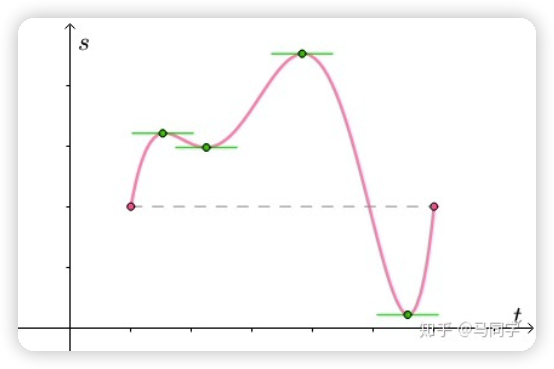
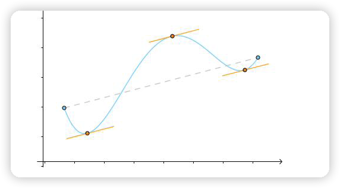
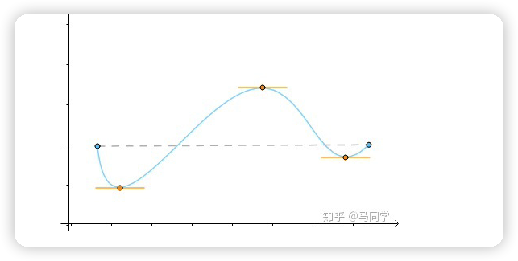
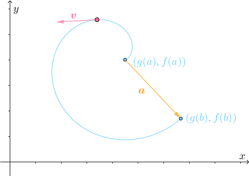
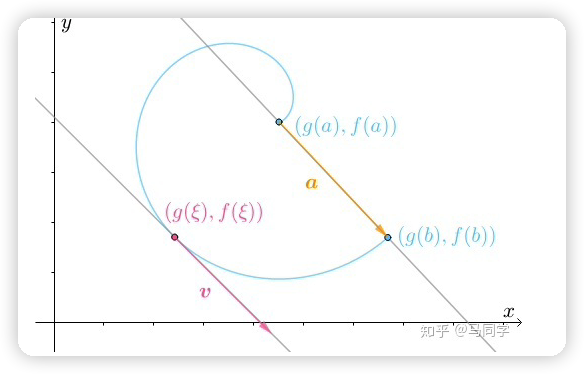
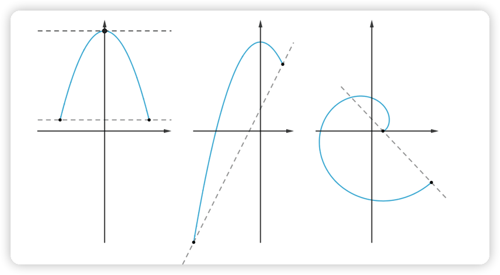
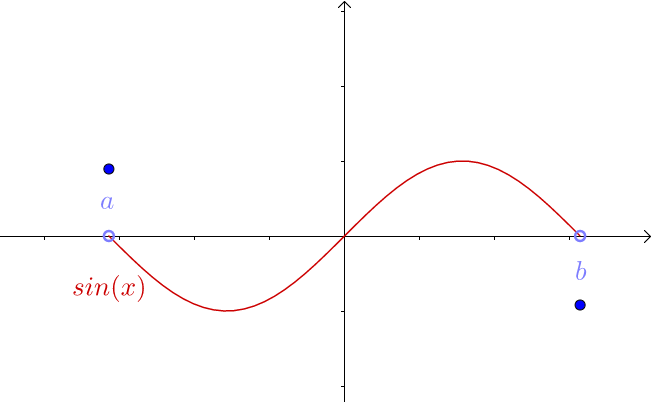
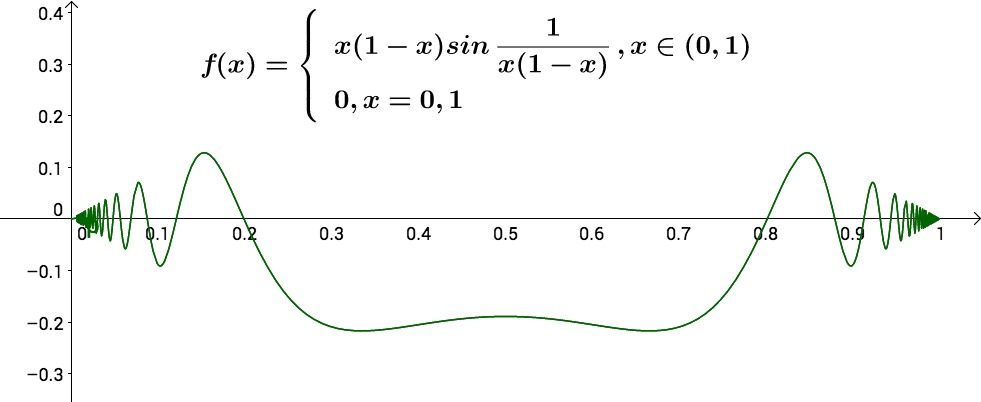

学习文章：
- https://zhuanlan.zhihu.com/p/47436090
- https://www.zhihu.com/question/37423489
- https://zhuanlan.zhihu.com/p/422000903
视频:
- https://www.youtube.com/watch?v=UUEXjEGOCyY&ab_channel=PengTitus
微分中值定理
三大微分中值定理
罗尔中值定理

为什么是闭区间连续、开区间可导？为了不影响排版我放在了文章末尾
函数可导定义:
1）设f(x)在x0及其附近有定义，则当a趋向于0时，若 [f(x0+a)-f(x0)]/a的极限存在, 则称f(x)在x0处可导。
2）若对于区间(a,b)上任意一点(m，f(m))均可导，则称f(x)在(a，b)上可导
拉格朗日中值定理


柯西中值定理


三大微分中值定理联系:

各类基本定理
费马定理
疑惑章
罗尔定理条件为什么是闭区间连续、开区间可导?

